WebTop 5¶
WebTop is a full-featured groupware which implements ActiveSync protocol.
Access to web interface is: https://<server_name>/webtop.
Note
If NethServer is bound to a remote Active Directory account provider a dedicated user account in AD is required by the module to be fully operational! See Join an existing Active Directory domain.
Authentication¶
Always use the full user name format <user>@<domain> for login to the
web application and Active Sync.
Example
Server name: mymail.mightydomain.com
Alternative mail domain: baddomain.net
User: goofy
Login: goofy@mightydomain.com
Note
Active Sync protocol is supported only on Android and iOS devices. Outlook is not supported.
Admin user¶
After installation, WebTop will be accessible using the administrator user. The administrator user can change global settings and login as any other user, however, it’s not a system user and can’t access any other service like Mail, Calendar, etc.
Default credentials are:
User: admin
Password: admin
The administrator user’s password must be changed from within the WebTop interface.
Warning
Remember to change the admin password after installation!
To check the mail of the system’s user admin account use the following login: admin@<domain> where <domain> is the
domain part of server FQDN.
Example
Server name: mymail.mightydomain.com
User: admin
Login: admin@mightydomain.com
Change admin password¶
Access WebTop using the admin user, then open user settings by clicking on the menu in the top-right corner.
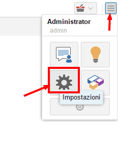
Go to Settings then click on Change password.
If you want to reset the admin password from command line, use the following commands:
curl -sL https://git.io/fjhn8 -o webtop-set-admin-password
bash webtop-set-admin-password <newpassword>
Remember to replace <newpassword> with your actual new password, example:
bash webtop-set-admin-password VeryInsecurePass
Changing the logo¶
To modify and customize the initial logo that appears on the login page of WebTop, you must upload the custom image file on the public images of the admin user and rename it with “login.png”.
Proceed as follows:
log in with the WebTop user admin
select the cloud service and public images:

upload the image (via the Upload button at the bottom left or simply dragging with a drag & drop)
rename the loaded image so that its name is “login.png” (use right click -> Rename):
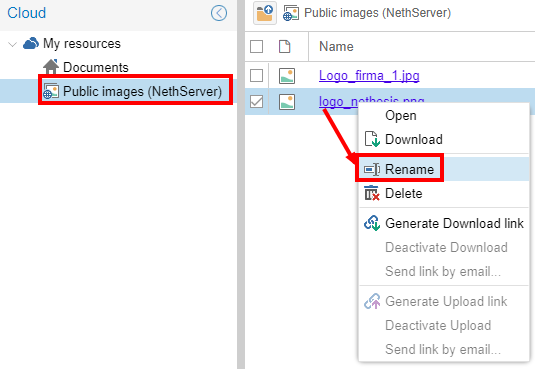
the next login will show the new logo on the login page
Note
Custom logo will be shown only when accessing Webtop using its public URL. The default public URL is the server FQDN, but it could be changed as described in the section below.
Change the public URL¶
By default, the public WebTop URL is configured with the FQDN name set in the server-manager.
If you want to change URL from this: http://server.domain.local/webtop to: http://mail.publicdomain.com/webtop
execute these commands
config setprop webtop PublicUrl http://mail.publicdomain.com/webtop
signal-event nethserver-webtop5-update
Note
When using a valid SSL certificate - for example Let’s Encrypt - it is rrecommended to configure the public URL using https
User settings management¶
Most user settings can be directly managed by the user itself via the settings menu. Locked settings require administration privileges.
The administrator can impersonate users, to check existing accounts using special login credentials:
User name:
admin!<username>Password:
<WebTop admin password>
While impersonating you receive similar user privileges, allowing you to control exactly what the user can see. Full administration of user settings is available directly in the administration interface, by right clicking on a user: the settings menu will open the full user settings panel, with all options unlocked.
It is also possible to make a massive change of the email domain of the selected users: select the users (Click + CTRL for multiple selection) to which you want to apply this change then right-click on Bulk update email domain.
Two factor authentication (2FA)¶
WebTop support two factor authentication. The user can choose between:
Google Authenticator: the code will be generated using Google Authenticator app (https://support.google.com/accounts/answer/1066447?co=GENIE.Platform%3DAndroid)
Secondary mail: the access code will be sent to selected mail address
To enable 2FA:
Click on the menu button on the top-right corner and select the Settings icon
Then select Security and click on the Activate button.
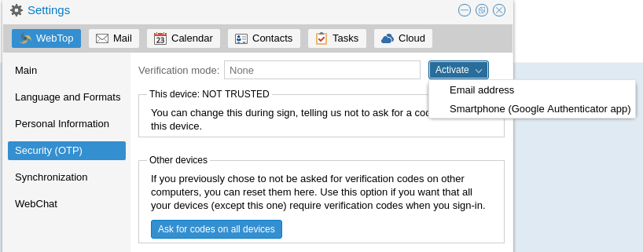
Synchronization with ActiveSync (EAS)¶
Mobile devices can be synchronized using ActiveSync. ActiveSync can be used only for contacts and calendars.
Apple iOS¶
Access your iOS device, navigate to Settings and add an Exchange account following the official guide: https://support.apple.com/en-us/HT201729
Fill the required fields with:
E-mail: add your mail address, eg: goofy@nethserver.org
Server: add your server public name, eg: mail.nethserver.org
Domain: leave blank
User name: enter your full user name, eg: goofy@nethserver.org
Password: enter your password
Note
iOS devices require a valid SSL certificate on the server. See Certificates
Google Android¶
Access your Android device, navigate to Settings, then select Add account -> Exchange (or “Company” for older releases).
Fill the required fields with:
User name: enter your full user name, eg: goofy@nethserver.org
Password: enter your password
Then select Manual configuration and change the name of the Server field accordingly to your server public name. Finally, if you have a self-signed certificate on your server, make sure to select SSL/TLS (accept all certificates) option.
Note
On some Android releases (notably Samsung), the User name and Domain must be entered in the same line.
In this case, leave blank the field before the backslash character (), and enter the user name in the following format: \goofy@nethserver.org
Multiple calendars and contacts¶
Calendars and address books shared by others with the user can be synchronized using the ActiveSync protocol.
Shared resources are displayed with the owner’s name and category (the number in square brackets is the internal id). Private events are not synchronized.
Mobile devices based on Apple iOS fully support folders / categories for calendar, contacts and activities (called reminders), including original colors.
Mobile devices based on Android support only calendars and contacts (activities are not supported), but using the Google Calendar application all items will have the same color.
Installing and using the CloudCal application, you can change the colors associated with each calendar, including shared ones.
On Android devices, contacts from shared phone books are merged with the personal phone book and displayed in a single view. Contacts can be modified and changes will be saved it the original source.
Note
In order to receive data via EAS on mobile devices, it is necessary to verify that the shared resources (Calendars and Contacts) have synchronization enabled (Full or Read only):

It is possible to enable or disable the synchronization for each shared resource (calendars and contacts). The user can customize every resource sharing with him by deciding the type of synchronization.
To do so, just right click on the shared resource → Customize → Devices sync.:
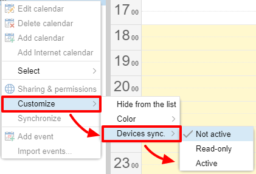
The default setting is “Not active”.
Synchronization with CalDAV and CardDAV¶
Calendars and address books can be synchronized also through CalDAV and CardDAV protocols.
To synchronize a calendar, pick up its URL link right-clicking on the calendar and selecting Links to this calendar,
then use it to configure your third-party client.
To synchronize an address book, pick up its URL link right-clicking on the address book and selecting Links to this address book,
then use it to configure your third-party client.
To authenticate, provide your credentials in the following form:
User name: enter your full user name (i.e. goofy@nethserver.org)
Password: enter your password
Some third-party clients allow to simplify the configuration through the auto-discovery feature that automatically discovers the synchronizable resources, as in the case of mobile devices clients (i.e. Android or iOS devices).
Note
If you are using clients that do not support auto-discovery, you need to use the full URL: https://<server_name>/webtop-dav/server.php
If you are using clients that support auto-discovery use URL: https://<server_name>
Google Android¶
A good, free, Android third-party client is Opensync.
install the suggested app from the market;
add a new account clicking on + key and select Login with URL and username method;
insert the
URL(https://<server_name>), complete username (i.e. goofy@nethserver.org) and password;click on the new profile and select the resources you want to synchronize.
Apple iOS¶
CalDAV/CardDAV support is built-in on iOS, so to configure it:
go to Settings -> Account and Password -> Add account;
select Other -> Add CalDAV or CardDAV account;
insert the server name (i.e. server.nethserver.org), complete username (i.e. goofy@nethserver.org) and password.
By default the synchronization URL uses the server principal name (FQDN), if you need to change it:
config setprop webtop DavServerUrl https://<new_name_server>/webtop-dav/server.php
signal-event nethserver-webtop5-update
Desktop clients¶
Thunderbird
To use CalDAV and CardDAV on Thunderbird you need third-party add-ons like Cardbook (for contacts) and Lightning (for calendars).
Cardbook add-on works fine, with easy setup and auto-discovery support.
Lightning add-on doesn’t support auto-discovery: any calendar must be manually added.
Outlook
open source Outlook CalDav Synchronizer client works fine, supporting both CardDAV and CalDAV.
Warning
Webtop is a client-less groupware: its functionalities are fully available only using the web interface!
The use of CalDAV/CardDAV through third-party clients cannot be considered a web interface alternative.
Sharing calendars and contacts¶
Sharing Calendar¶
You can share each personal calendar individually. Select the calendar to share -> right click -> Sharing and permissions:

Select the recipient user of the share (or Group) and enable permissions for both the folder and the individual items:
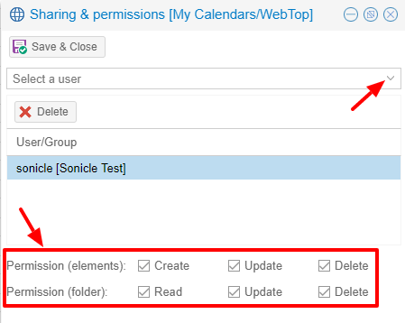
Resource calendars¶
Through the resource calendars it is possible to reserve company cars, meeting rooms and other shared equipment in an exclusive way. To book a resource, you have to create an event and add the resource among the guests, verifying that the resource is available for the required time span.
Creating a new resource¶
It is necessary to create a dedicated account for each resource into the account provider of NethServer.
Note
If the newly created user is not used for other purposes, it is advisable to block it and to make the built-in email address only available for internal use
Once the account has been created, you can access the WebTop admin panel to create the new resource and fill in the required fields:
Name: name of the resource which must coincide with the user created on the account provider
Display Name: description of the resource that will be displayed as calendar
Type: choose the type of resource between Room and Equipment
Available Resource: select to make the resource available
Email: leave as suggested (resource@domain.ext)
Permissions: add the users or groups who will be able to book the resource (for example, in order to allow all users to use the resource, add the “users” group)
Manager: indicate whether to assign a “manager” user (or group) who will be able to delete or move reservations made by other users on this resource
Finishing with the Save & Close button, the resource will be created and automatically added to the shared calendars of the users specified in the permissions.
Booking a resource¶
Users who will have permission to book a resource will be able to do so by creating a calendar event and adding the resource among the guests using the Add Resource button.
With the Show availability button, a table with the busy and free time intervals of the added resources is shown.
It is possible to modify the time-span resolution shown in the table using this key:
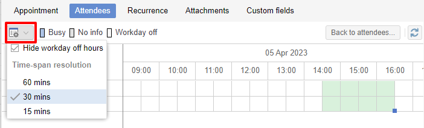
Change reservation of a resource¶
Only the event owner can change the resource reservation. The user defined as Manager of the resource has the permission to modify (delete or move) reservations made by other users as well.
Custom labels¶
It is possible to add one or more labels to an email, a calendar event or a task.
There are two types of labels:
Private: not usable for custom fields and not visible to other users
Shared: usable for custom field panels and visible to other users
The user can normally only manage Private labels. In order to manage the Shared labels it is necessary to activate a specific authorization via the admin panel:
go to Administration menu, then choose Domains -> NethServer -> Groups -> Users -> Authorization
add (+) -> Services -> com.sonicle.webtop.core (WebTop) -> Resource -> TAGS -> Action -> MANAGE
click OK then Save and exit
The management of labels can be reached from this button at the top right:

The same functionality can also be reached from the individual modules (Mail, Address Book, Calendar and Tasks) by right clicking -> Labels -> Manage labels.
Visibility can be set only during label creation. To change the label visibility you need to delete the label and recreate it again.
The created labels (both Private and Shared) can be used on any other module (Mail, Address Book, Calendar and Tasks).
Custom fields¶
With custom fields it is possible to provide information and additional data for each contact, event or activity.
Custom fields are only available for the Address Book, Calendar, and Tasks modules and are specific to each different module.
In order to manage custom fields and its panels, the user must have a specific authorization, obtained through the administration panel:
go to Administration menu, then choose Domains -> NethServer -> Groups -> Users -> Authorization
add (+) -> Services -> com.sonicle.webtop.core (WebTop) -> Resource -> CUSTOM_FIELDS -> Action -> MANAGE
click OK then save and exit
Users who have this authorization will find the specific button available at the top right:
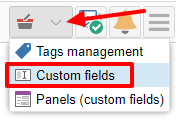
To create a new custom field it is necessary to fill in at least the Name field and select the Type:
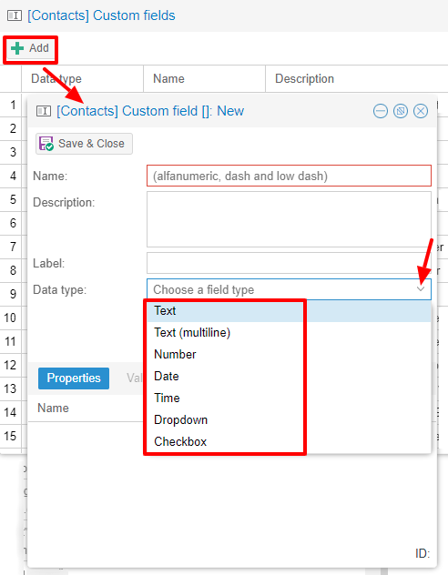
For the Name field only alphanumeric characters (including - and _) are allowed. Spaces are not allowed.
The Description field is used to add details to the field and the Label field represents the label that will be shown in correspondence with the field within the panel in which it will be used.
For each field it is possible to enable these two options:
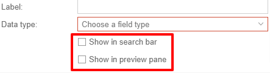
Show in search bar: the field is added in the multiple search window (a new access will be required)
Show in preview: the field is shown in the preview window of a contact
Additional specific properties, that are also customizable, are available for each type.
For the List box type it is necessary to fill in the values to be selected:
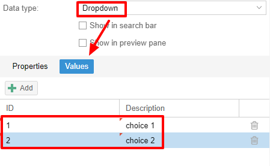
Using the Clone button you can copy the custom field to create a similar one:
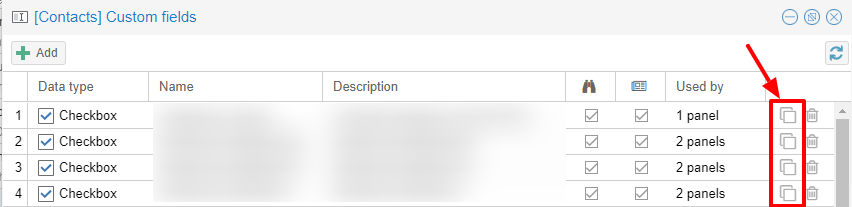
Note
With the FREE version, installed by default, it is possible to create up to a maximum of 3 custom fields for each different module (3 in Address Book + 3 in Calendar + 3 in Activities). To remove this limit it is necessary to upgrade to the PREMIUM version by purchasing a dedicated license on Nethesis shop
Searches on custom fields¶
One of the best functionalities of custom fields is the possibility to perform multiple searches on all modules and fields for which the option Show in search bar has been activated.
Custom panels¶
With custom panels you can use the custom fields already created and associate them to the resources in each module (contacts, events and activities).
Users with the authorization to manage custom fields can access the configuration panel using the button at the top right:
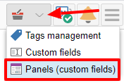
When creating a new panel it is mandatory to indicate the Name that will appear in the resource. You can also insert a Description and a Title.
Using shared labels, you can easily assign panels to specific resource categories. A panel without any associated label will be assigned to every available resource (all contacts, all events or all activities).
Through the Add button it will be possible to select which custom fields to use among those already created in the panel.
Manage identities¶
In click Add and fill in the fields
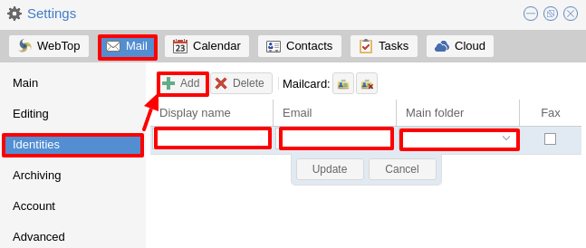
It is possible to associate the new identity with a folder in your account or of a shared account
Local account:

Shared account:
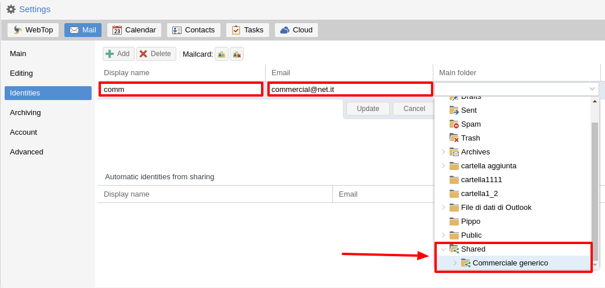
Otherwise the sent mails will always end up in the “Sent Items” folder of your personal account.
Mailcards of user and domain¶
One of the main features of managing signatures on WebTop is the opportunity to integrate images or custom fields profiled per user.
To use the images you need to upload them to the public cloud through the WebTop admin user like this:
You can use the Upload button to load an image which is at the bottom or simply via a drag & drop.
Note
Remember that the public images inserted in the signature are actually connected with a public link. To be visible to email recipients, the server must be reachable remotely on port 80 (http) and its FQDN name must be publicly resolvable.
Alternatively, you can configure a global setting to turn images automatically into inline attachments instead of public internet links
It is possible to do this from web interface by accessing the administration panel -> Properties (system) -> Add -> select com.sonicle.webtop.mail (Mail) and enter the data in the Key and Value fields according to the key to be configured:
public.resource.links.as.inline.attachments = true (default = false)
To change your signature, each user can access the :
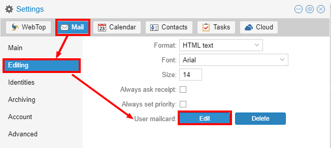
Yuu can use the uploaded image inside the mailcard with this button:
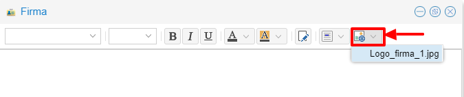
Note
The personal mailcard can be associated with the user or the mail address. Users with access to the mail address, will also be able to use the mailcard.
By accessing the user settings from the WebTop administration panel ( ) it is also possible to set up a general domain mailcard that will be automatically set for all users who have not configured their personal mailcard.:
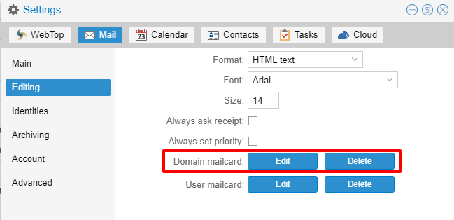
Furthermore, it will also be possible to modify personal information:
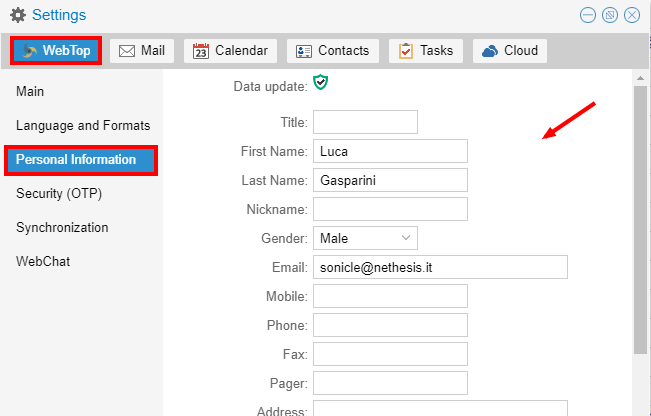
that can be used within the template-based fields within the domain mailcard editor:

In this way it is possible to create a single mailcard that will be automatically customized for every user who does not use his own mailcard.
Configure multiple mailcards for a single user¶
It is possible to configure multiple mailcards (HTML signatures) for each user.
Access the and create multiple identities:

To edit every single signature select then select each individual signature and click on the edit mailcard button
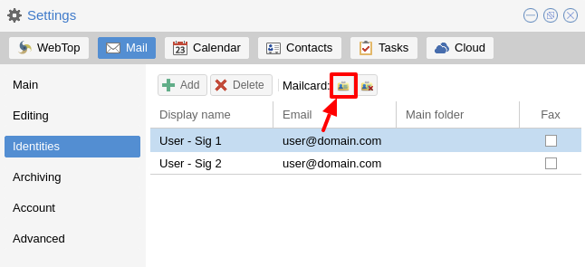
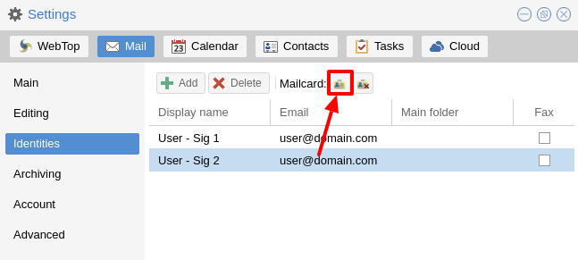
When finished, close the window and click YES:
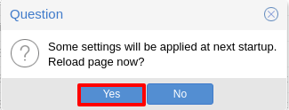
to use multiple mailcards, create a new email, and choose the signature:
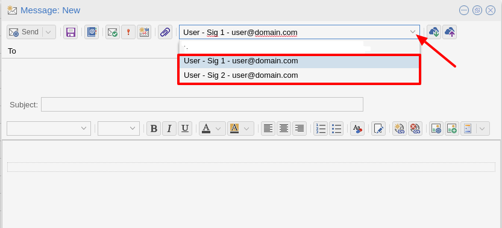
Mail inline preview¶
By default, the mail page will display a preview of the content of latest received messages.
This feature can be enabled or disabled from the Settings menu, under the Mail tab, the check box is named Show quick preview on message row.
Mail archiving¶
Archiving is useful for keeping your inbox folder organized by manually moving messages.
Note
Mail archiving is not a backup.
The system automatically creates a new special Archives folder
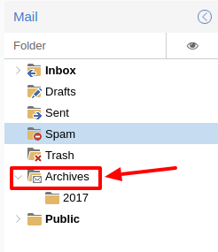
If the Archives folder does not appear immediately upon login, it will appear at the first archiving.
There are three archiving criteria in
Single folder: a single root for all archived emails
Per year: a root for each year
By year / month: a root for each year and month
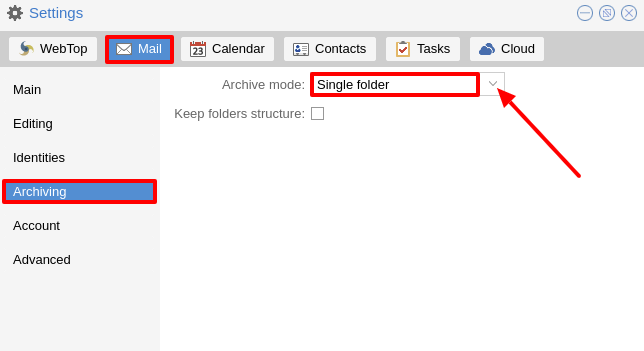
To maintain the original structure of the folders is possible to activate Keep folder structure
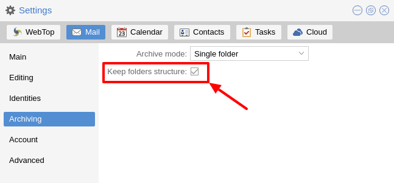
The archiving operation is accessible from the contextual menu (right click). Click on Archive

The system will process archiving according to the last settings chosen.
Subscription of IMAP folders¶
On WebTop, by default, all IMAP folders on the server are automatically subscribed and therefore visible since the first login.
If you want to hide from the view some folders, which is equivalent to removing the subscription, you can do so by simply clicking the right mouse button on the folder to hide and select from the interactive menu the item “Hide from the list”.
For example, if you want to hide the subfolder “folder1” from this list, just right-click on it and select “Hide from the list”:

It is possible to manage the visibility of hidden folders by selecting the Manage visibility function:
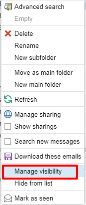
For example, if you want to restore the subscription of the folder1 just hidden, just select it from the list of hidden folders and click on the icon on the left:

Customize proactive security on emails¶
The proactive security function on email messages allows some customization both for the end user and the WebTop admin.
For the end user it is possible to mark a sender as trusted when it is recognized as such by the yellow shield. To do so, it is possible to click directly on the shield or right click on the sender and select the Mark as trusted entry.
Note
This type of customization is only valid for the user that performed the action. It is possible to mark a sender as trusted only if the shield is yellow.
The admin user can disable all or just some of the rules that are part of the PAS (ProActive Security), both for single users and groups.
To do so, it is necessary to add a specific authorization (to the single user or the group of users) for the Service com.sonicle.webtop.mail (Mail) and for the PRO_ACTIVE_SECURITY resource:

Below is an explanation of every single entry available as Action :
DISABLED: completely disables PASNO_LINK_DOMAIN_CHECK: do not check domains different form the sender’s domainNO_MY_DOMAIN_CHECK: do not verify if the sender’s domain is in my domainNO_FREQUENT_CONTACT_CHECK: do not check if the sender is in my contacts which are saved automaticallyNO_ANY_CONTACTS_CHECK: do not check if the sender is among one of my contactsNO_FAKE_PATTERNS_CHECK: do not verify the presence of false patterns in the sender (e.g. email address of the name shown is different from the sender’s email address)NO_UNSUBSCRIBE_DIRECTIVES_CHECK: do not check the entry for the unsubscribe directives to the mailing list (only if the spam status is green)NO_DISPLAYNAME_CHECK: do not compare the contact’s display name with the contact in my address book with the same emailNO_SPAM_SCORE_VISUALIZATION: do not show/check the spam score displayed in the message headerNO_LINK_CLICK_PROMPT: do not check the click action on linksNO_ZIP_CHECK: do not give warning about zip attachments
This way it is possible to customize and create special profiles for some users who might not want all the actions to be active.
The administrator can also choose the list of file extensions for attachments which are considered a threat.
As default, these are the extensions which are considered dangerous: exe,bat,dll,com,cmd,bin,cab,js,jar
To modify this list it is necessary to add this global setting:
Service =
com.sonicle.webtop.mailKey =
pas.dangerous.extensions
For example, if you wanted to add the HTML extension among those that are considered dangerous, the value field should contain the following:
Value =
exe,bat,dll,com,cmd,bin,cab,js,jar,html(Values always need to be separated by a comma)
Export events (CSV)¶
To export calendars events in CSV (Comma Separated Value) format, click on the icon on top right corner.

Finally, select a time interval and click on Next to export into a CSV file.
Tasks¶
Quick view filters¶
In the toolbar above the grid there are 7 buttons that allow you to select the most suitable quick view. The first two buttons refer to today’s activities or to those planned within the next 7 days:
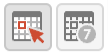
Today: shows unfinished tasks without a start date or with a start date up to today (inclusive) and those completed with an end date up to today (inclusive)
Next 7 days: shows uncompleted tasks with no start date or starting up to 7 days from today and completed tasks with completion date up to now (inclusive)
The remaining 5 buttons allow you to obtain these other types of quick views:
Not started: shows only activities with status “To be started” and starting today (inclusive)
Late: shows only uncompleted tasks with start date up to today (inclusive) and completion date previous to the current one
Completed: shows all activities with status completed and with any date range
Not completed: shows all activities with status other than completed and start date within 1 year (for recurring tasks, only the first instance of the series still to be completed is shown)
All: shows all activities in any status (for recurring tasks the series icon main is shown)
Recurring tasks¶
It is possible to configure any type of recurrence:

Editing a recurring activity can be done in two different ways:
on the individual task by opening it with a double click from a view other than All In this case the task will be removed from the recurrence and its icon will become this one:

on the entire series with a double click from the All view or by using the following button on the single task already open:

Sub-tasks¶
On any task it is always possible to add related sub-tasks (one Master/Slave level only) simply by using the right button and selecting Add sub-task Within the connected tasks, both in the master and in the slave ones, a link is available at the bottom right to open the related tasks:
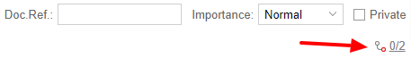
It is possible to Move or Copy this type of activity (right click -> Move/Copy) by choosing to copy or move the sub-activities through an option active by default.
Multiple searches¶
In the bar at the top there is a quick search that is executed on all fields. You can also narrow the search by filling multiple search fields.

Nextcloud integration¶
Note
Before proceeding, verify that the Nextcloud module has been installed from Software Center
By default, Nextcloud integration is disabled for all users. To enable it, use the administration panel which can be accessed using the webtop admin password
For example, if you want to activate the service for all webtop users, proceed as follows:
access the administrative panel and select Groups:

modify the properties of the “users” group by double clicking and select the button related to the Authorizations:

add to existing authorizations those relating to both the
STORE_CLOUDandSTORE_OTHERresources by selecting the items as shown below:

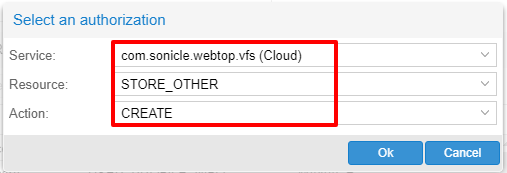
so get this:
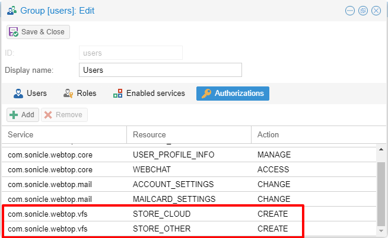
save and close.
At this point from any user it will be possible to insert the Nextcloud resource (local or remote) in your personal Cloud.
To do this, simply select the Cloud button and add a new Nextcloud resource by right clicking on My resources and then Add resource in this way:
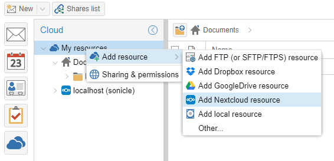
A pre-filled wizard will open:
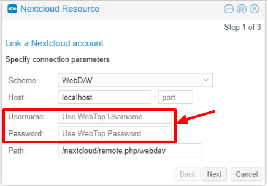
Note
Remember to fill in the User name and Password fields related to access to the Nextcloud resource, otherwise it will not be possible to use the public link to the shared files
Note
If Nextcloud has been configured with a custom virtual host (eg. nextcloud.mydomain.com) the Path must be changed from /nextcloud/remote.php/webdav to /remote.php/webdav, please note that /nextcloud prefix has been removed. Also make sure to enter the name of the custom virtual host inside the Host (eg. nextcloud.mydomain.com).
Finally, remember to configure the virtual host name as server alias: access Server Manager Dashboard, click on the server FQDN and add a new alias inside the dialog.
Proceed with the Next button until the Wizard is complete.
Use the personal Cloud to send and receive documents¶
Cloud module allows you to send and receive documents through web links.
Note
The server must be reachable in HTTP on port 80
How to create a link to send a document¶
To create the link, select the button at the top right:
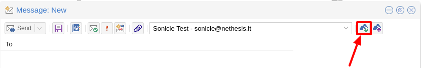
Follow the wizard to generate the link, use field date to set the deadline.
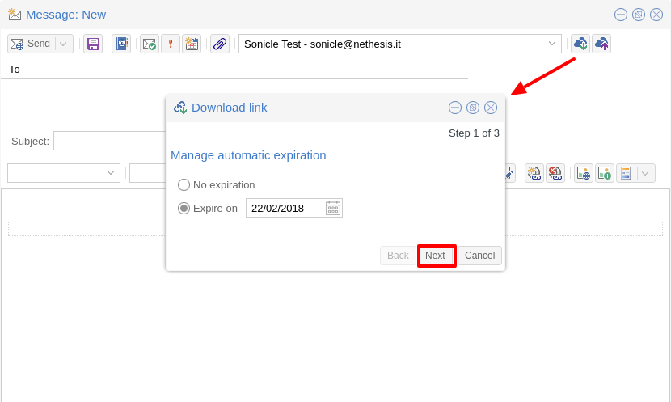
you can create a password to protect it:

The link will be generated and will be inserted in the new mail:
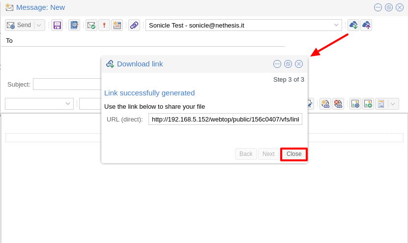
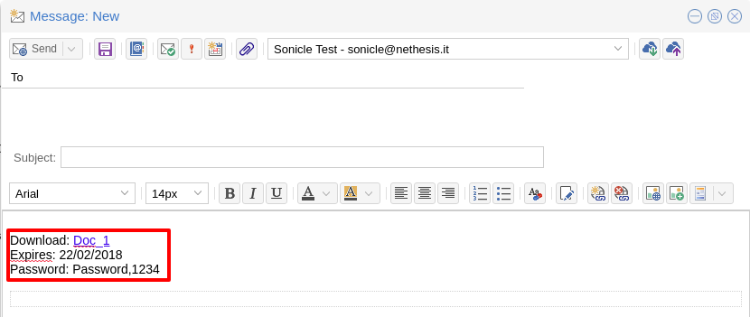
Downloading the file, generates a notification to the sender:

Request for a document¶
To create the request, insert the subject of the email than select the button at the top right:

Follow the wizard. You can set both an expiration date and a password. The link will be automatically inserted into the message:

A request email will be sent to upload the document to the Cloud:
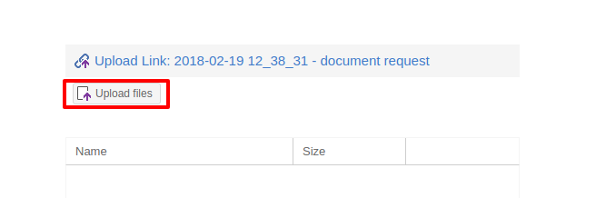
The sender will receive a notification for each file that will be uploaded:
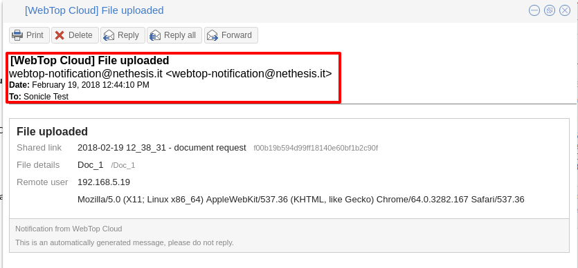
To download the files just access your personal with date and name:
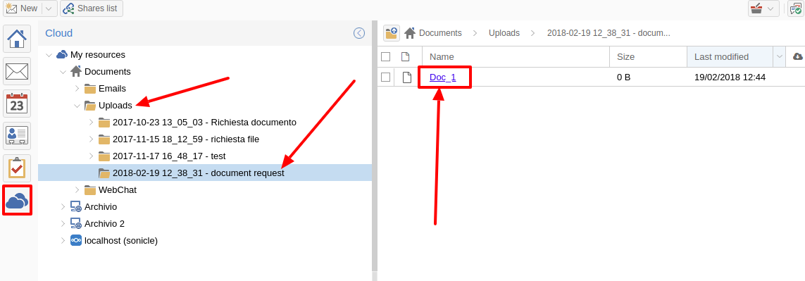
Chat integration¶
Web chat integration installation is disabled by default for all users.
To enable chat integration:
Install “Instant messaging”” module from Software Center.
Access WebTop as admin user then enable the web chat authorization:
Access the Administration menu, then
Click OK then save and close
Jitsi integration and support for links to third-party video calls¶
With this integration it is possible to start a new video conference and send the invitation via email, or schedule one by creating the event directly from the calendar. To activate the integration it is necessary to configure the Jitsi instance that you would like to use directly from the cockpit interface, in the advanced settings for WebTop:
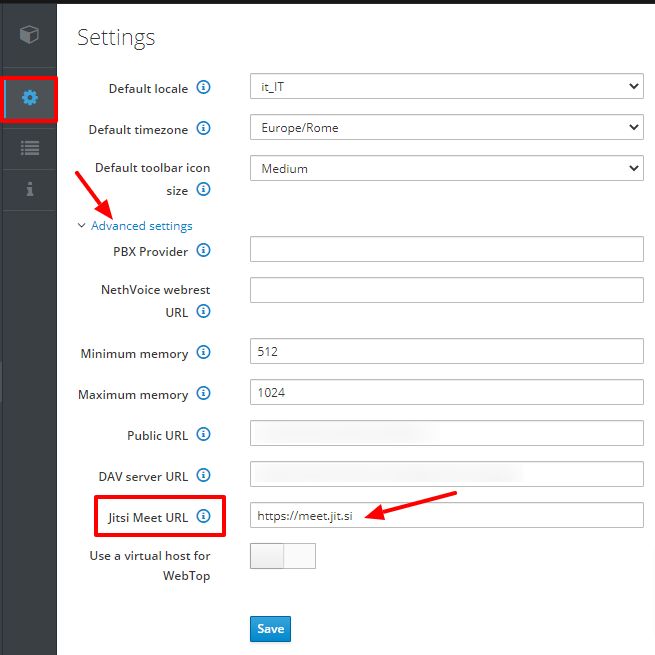
By clicking on the Save button, the new configuration will be applied and WebTop restarted.
By default, the videoconferencing service is disabled for all users. To enable it, for all users it is necessary to add a specific authorization from the administration panel:
Access the Administration menu, then
Click OK then save and close
The conference will be available for the users after a new login.
To create a new video conference meeting, you can start from these two buttons:
(top left)
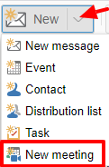
(top right)
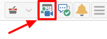
It is also possible to do this from a new email window or a new calendar event.
For each new meeting you have to decide whether it should start immediately (instant meeting) or if it should be scheduled by invitation.
There are several ways to share the new meeting link:
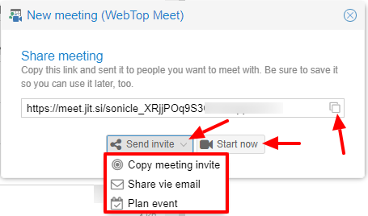
Start now allows you to immediately access the newly created meeting room and copy the link via the button available next to the URL
Send invitation -> Copy meeting invite: in this case an invitation message, which also includes the meeting link, will be copied (e.g: To join the meeting on Jitsi Meet, click this link: …)
Send invitation -> Share by email: you will be asked if you would like to change the subject and date of the meeting, which will then be inserted in the newly generated email:
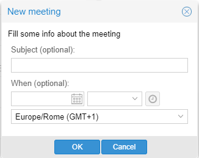
Send invitation -> Plan event: also in this case you will be asked if you would like to change the subject and date/time of the meeting before creating the calendar event that will allow you to invite other participants.
If an event contains a link to a third-party video conference, the buttons that will allow you to access the meeting directly:

The video conferencing services that are currently supported, in addition to Jitsi, are: Google Meet, MS Teams and Zoom. It is possible to add additional platforms through a global setting.
Send SMS from contacts¶
It is possible to send SMS messages to a contact that has the mobile number in the address book. To activate sending SMS, first you need to choose one of the two supported providers: SMSHOSTING or TWILIO.
Once registered to the service of the chosen provider, retrieve the API keys (AUTH_KEY and AUTH_SECRET) to be inserted in the WebTop configuration db. The settings to configure are those shown here .
It is possible to do this from web interface by accessing the administration panel -> Properties (system) -> Add -> select com.sonicle.webtop.core (WebTop) and enter the data in the Key and Value fields according to the key to be configured:
sms.provider = smshosting or twilio
sms.provider.webrest.user = API AUTH_KEY
sms.provider.webrest.password = API AUTH_SECRET
sms.sender = (default optional)
The sms.sender key is optional and is used to specify the default sender when sending SMS.
It is possible to indicate a number (max 16 characters) or a text (max 11 characters).
Note
Each user always has the possibility to overwrite the sender by customizing it as desired through its settings panel: WebTop -> Switchboard VOIP and SMS -> SMS Hosting service configured -> Default sender
To send SMS from the address book, right-click on a contact that has the mobile field filled in -> Send SMS
Browser notifications¶
With WebTop, the desktop notification mode integrated with the browser was introduced.
To activate it, simply access the general settings of your user:
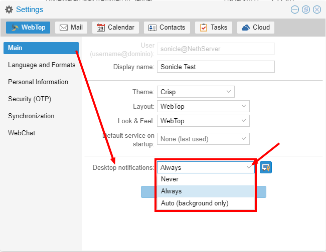
It is possible to enable desktop notification in two modes:
Always: notifications will always be shown, even with the browser open
Auto (in background only): notifications will be shown only when the browser is in the background
Once the mode is selected, a browser consent request will appear at the top left:

If you need to enable this consent later on a different browser just click on the appropriate button:

External IMAP accounts (Beta)¶
External IMAP accounts can be accessed in read-only mode. Each user can have maximum 3 external accounts.
To enable the feature:
Access the administration panel, then selected Properties (system)
Click on Add button and selected com.sonicle.webtop.mail
Create a new key named
external-account.enabledwith valuetrueGive a specific authorization to the user by setting:
Service:
com.sonicle.webtop-mailResource:
EXTERNAL_ACCOUNT_SETTINGSAction:
CHANGE
Users can now configure personal external accounts by accessing the Settings section.
Subscribing remote resources¶
WebTop supports subscription to remote calendars and contacts (directory) using cardDAV, calDav and iCal.
Remote calendars¶
An Internet Calendar can be added and synchronized. To do so just click the right button on personal calendars, Add Internet Calendar. Two types of remote calendars are supported: Webcal (ics format) and CalDAV.
Note
Synchronization of Webcal calendars (ics) is always done by downloading every event on the remote resource every time, while only the differences are synchronized with the CalDAV mode
Example of Google Cal remote calendar (Webcal only - ICS)¶
Take the public access ICS link from your Google calendar: Calendar options -> Settings and sharing -> Secret address in iCal format
On WebTop, add an Internet calendar of type Webcal and paste the copied URL without entering the authentication credentials in step 1 of the wizard.
The wizard will connect to the calendar, giving the possibility to change the name and color, and then perform the first synchronization.
Note
The first synchronization may fail due to Google’s security settings. If you receive a notification that warns you about accessing your resources you need to allow them to be used confirming that it is a legitimate attempt.
Remote contacts (directory)¶
Example of Google CardDAV remote address book¶
1) On Webtop, configure a new Internet address book, right-click on Personal Categories -> Add Internet address book and enter a URL of this type in step 1 of the wizard: https://www.googleapis.com/carddav/v1/principals/XXXXXXXXXX@gmail.XXX/lists/default/ (replace the X your gmail account)
Enter the authentication credentials (as user name use the full address of gmail):

The wizard in the following steps will connect to the phonebook, giving the possibility to change the name and color, and then perform the first synchronization.
Note
To be able to complete the synchronization it is necessary to enable on your account Google, in the security settings, the use of apps considered less secure (here a guide on how to do: https://support.google.com/accounts/answer/6010255?hl=it).
Synchronization of remote resources can be performed manually or automatically.
Automatic synchronization¶
To synchronize automatically you can choose between three time intervals: 15, 30 and 60 minutes. The choice of the time interval can be made in the creation phase or later by changing the options. To do this, right-click on the phonebook (or on the calendar), Edit Category, Internet Addressbook (or Internet Calendar):
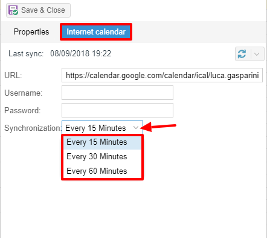
Manual synchronization¶
To update a remote address book, for example, click on it with the right mouse button and then select the item “Synchronize”:

For CardDav address books, as well as for remote CalDAV calendars, you can select whether to perform a full synchronization or only for changes. To do this, right-click on the phonebook (or on the calendar), Edit Category:
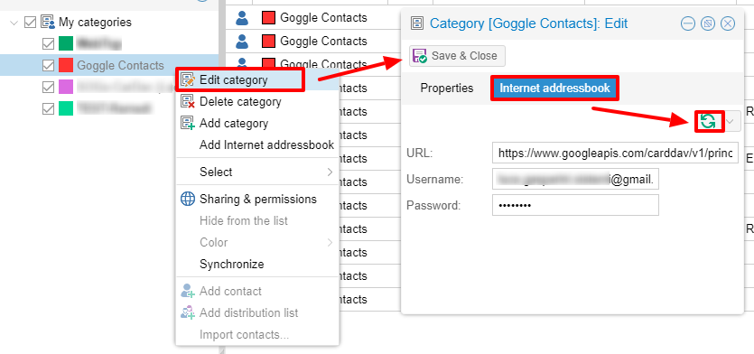
Select the desired mode next to the synchronization button:
User access and user session logs¶
The table showing the entire log of accesses and sessions for each user is available under the administrator panel. Access the Administration menu, then Domains –> NethServer –> Audit (domain) –> Access log.
For each access, the table reports the following data in columns: session ID, user name, date and time, session duration, authentication status and any login errors. It is possible to activate the geolocation for the access by public IP addresses detected. To activate this feature, you need to register an account on ipstack (only this provider is currently supported) and obtain the API KEY to insert in the configuration db.
Login to the administration panel -> Property (system) -> add -> com.sonicle.webtop.core (WebTop) -> enter the following data in the fields Key e Value :
geolocation.provider=ipstack
geolocation.ipstack.apikey=<API KEY FROM PROVIDER>
Then, after a logout and a login, to show the geolocation of the public IPs please click on the icon at the far right of the row:
Through the multiple search it is possible to quickly find the data of interest:
Impersonate login
By default, the logins made through impersonate (admin!<user>) are not shown in the access logs table.
In order to also add this type of access, you need to add the following key for the core service:
key=audit.logimpersonated
value=true
Login notification for each new device¶
With this feature, it is possible to receive an email that notifies you through a security alert every time a new device accesses the account for the first time.
Note
By default, this feature is disabled for all users to avoid too many “unintentional” false positives on first login.
To activate the notification for all users it is necessary to issue these commands from the Shell:
config setprop webtop KnownDeviceVerification enabled
If, in addition to the user being accessed, you also need to send these notification emails to other email addresses in BCC (for additional administrative control), it is possible to do so by indicating the recipients in the following way:
config setprop webtop KnownDeviceVerification enabled
config setprop webtop KnownDeviceVerificationRecipients admin1@example.com,admin2@example.com
If you want to avoid sending the notification for all new accesses performed by one (or more) network subnets, you can do this through a white list, as you can see in the example below:
config setprop webtop KnownDeviceVerification enabled
config setprop webtop KnownDeviceVerificationNetWhitelist 192.168.1.0/24,10.8.8.0/24
To apply the changes shown in the previous commands and restart the application, please execute the final command below:
signal-event nethserver-webtop5-update
Note
Accesses made through impersonate (admin!<user>) will never send an email notification
Change default limit “Maximum file size”¶
There are hard-coded configured limits related to the maximum file size:
Maximum file size for chat uploads (internal default = 10 MB)
Maximum file size single message attachment (internal default = 10 MB)
Maximum file size for cloud internal uploads (internal default = 500 MB)
Maximum file size for cloud public uploads (internal default = 100 MB)
To change these default values for all users, the following keys can be added via the admin interface: Properties (system) -> Add
Maximum file size for chat uploads
Service:
com.sonicle.webtop.coreKey:
im.upload.maxfilesize
Maximum file size for single message attachment
Service:
com.sonicle.webtop.mailKey:
attachment.maxfilesize
Maximum file size for cloud internal uploads
Service:
com.sonicle.webtop.vfsKey:
upload.private.maxfilesize
Maximum file size for cloud public uploads
Service:
com.sonicle.webtop.vfsKey:
upload.public.maxfilesize
Note
The value must be expressed in Bytes (Example 10MB = 10485760)
Importing contacts and calendars¶
WebTop supports importing contacts and calendars from various file formats.
Contacts¶
Supported contacts format:
CSV - Comma Separated values (*.txt, *.csv)
Excel (.*xls, *.xlsx)
VCard (*.vcf, *.vcard)
LDIF (*.ldif)
To import contacts:
Right click on the target phone book, then select Import contacts

Select the import format and make sure that fields on the file match the ones available on WebTop

If you are importing a phone book exported from Outlook, make sure to set Text qualifier to " value.
Calendars¶
Supported calendar format: iCalendar (*.ics, *.ical, *.icalendar)
To import events:
Right click on the target calendar, then select Import events
Select the import format
Then choose if you want to delete all existing events and import new ones, or just append imported data to existing calendar events
Hide auto-suggested recipient in lookups¶
To disable the suggestion of automatically saved addresses, access the web administration panel -> Properties (system) -> Add -> select com.sonicle.webtop.core (WebTop) and enter the data in the Key and Value fields according to the key to be configured:
recipient.provider.auto.enabled = false (default is true)
Edit subject of a mail and save it¶
To enable the modification of the subject for received and sent emails, access the web administration panel -> Properties (system) -> Add -> select com.sonicle.webtop.mail (Mail) and enter the data in the Key and Value fields according to the key to be configured:
message.edit.subject = true (default is false)
Importing from Outlook PST¶
You can import email, calendars and address books from an Outlook PST archive.
Before using the followings scripts, you will need to install the libpst package:
yum install libpst -y
Also make sure the PHP timezone corresponds to the server timezone:
config getprop php DateTimezone
PHP time zone can be updated using the following command:
config setprop php DateTimezone Europe/Rome
signal-event nethserver-php-update
Mail¶
Initial script to import mail messages: /usr/share/webtop/doc/pst2webtop.sh
To start the import, run the script specifying the PST file and the system user:
/usr/share/webtop/doc/pst2webtop.sh <filename.pst> <user>
Example:
# /usr/share/webtop/doc/pst2webtop.sh data.pst goofy
Do you wish to import email? [Y]es/[N]o:
All mail messages will be imported. Contacts and calendars will be saved inside a temporary file and the script will output further commands to import contacts and calendars.
Example:
Events Folder found: Outlook/Calendar/calendar
pst2webtop_cal.php goody '/tmp/tmp.Szorhi5nUJ/Outlook/Calendar/calendar' <foldername>
...
log created: /tmp/pst2webtop14271.log
All commands are saved also in the reported log.
Contacts¶
Script for contacts import: /usr/share/webtop/doc/pst2webtop_card.php.
The script will use files generated from mail import phase:
/usr/share/webtop/doc/pst2webtop_card.php <user> <file_to_import> <phonebook_category>
Example
Let us assume that the pst2webtop.sh script has generated following output from mail import:
Contacts Folder found: Personal folders/Contacts/contacts
Import to webtop:
./pst2webtop_card.php foo '/tmp/tmp.0vPbWYf8Uo/Personal folders/Contacts/contacts' <foldername>
To import the default address book (WebTop) of foo user:
/usr/share/webtop/doc/pst2webtop_card.php foo '/tmp/tmp.0vPbWYf8Uo/Personal folders/Contacts/contacts' WebTop
Calendars¶
Script for calendars import: /usr/share/webtop/doc/pst2webtop_cal.php
The script will use files generated from mail import phase:
/usr/share/webtop/doc/pst2webtop_cal.php <user> <file_to_import> <foldername>
Example
Let us assume that the pst2webtop.sh script has generated following output from mail import:
Events Folder found: Personal folders/Calendar/calendar
Import to webtop:
./pst2webtop_cal.php foo '/tmp/tmp.0vPbWYf8Uo/Personal folders/Calendar/calendar' <foldername>
To import the default calendar (WebTop) of foo user:
/usr/share/webtop/doc/pst2webtop_cal.php foo '/tmp/tmp.0vPbWYf8Uo/Personal folders/Calendar/calendar' WebTop
Known limitations:
only the first occurrence of recurrent events will be imported
Outlook reminders will be ignored
Note
The script will import all events using the timezone selected by the user inside WebTop, if set. Otherwise system timezone will be used.
Troubleshooting¶
Blank page after login¶
You can access WebTop using system admin user (NethServer Administrator) using the full login name, eg: admin@nethserver.org.
If the login fails, mostly when upgrading from WebTop 4, it means that the admin user doesn’t have a mail address.
To fix the problem, execute the following command:
curl -s https://git.io/vNuPf | bash -x
Synchronized events have different time¶
Sometimes calendar events created on mobile devices and synchronized via EAS, are shown with a wrong time, for example with a difference of 1 or 2 hours.
The problem is due to the PHP time zone which can be different from the system time zone.
With this command you can see the current time zone set for PHP:
config getprop php DateTimezone
Output example:
# config getprop php DateTimezone
UTC
If the Time Zone is not the desired one, you can changed it using these commands:
config setprop php DateTimezone "Europe/Rome"
signal-event nethserver-php-update
To apply the changes, execute:
signal-event nethserver-httpd-update
signal-event nethserver-webtop5-update
List of PHP supported time zones: http://php.net/manual/it/timezones.php
Delete automatically suggested email addresses¶
When compiling the recipient of a mail, some automatically saved email addresses are suggested. If you need to delete someone because it is wrong, move with the arrow keys until you select the one you want to delete (without clicking on it), then delete it with Shift + Canc
WebTop vs SOGo¶
WebTop and SOGo can be installed on the same machine, although it is discouraged to keep such setup on the long run.
ActiveSync is enabled by default on SOGo and WebTop, but if both packages are installed, SOGo will take precedence.
To disable ActiveSync on SOGo:
config setprop sogod ActiveSync disabled
signal-event nethserver-sogo-update
To disable ActiveSync on WebTop change /etc/httpd/conf.d/webtop5-zpush.conf config file.
All incoming mail filters configured within SOGo, must be manually recreated inside WebTop interface. This also applies if the user is switching from WebTop to SOGo.
Google integration¶
Users can add their own Google Drive accounts inside WebTop. Before proceeding, the administrator must create a pair of API access credentials.
Google API¶
Access https://console.developers.google.com/project and create a new project
Create new credentials by selecting “OAuth 2.0 clientID” type and remember to compile “OAuth consent screen” section
Insert new credentials (Client ID e Client Secret) inside WebTop configuration
It is possible to do this from web interface by accessing the administration panel -> Properties (system) -> Add -> select com.sonicle.webtop.core (WebTop) and enter the data in the Key and Value fields according to the key to be configured:
googledrive.clientid = (Google API client_ID)
googledrive.clientsecret = (Google API client_secret)